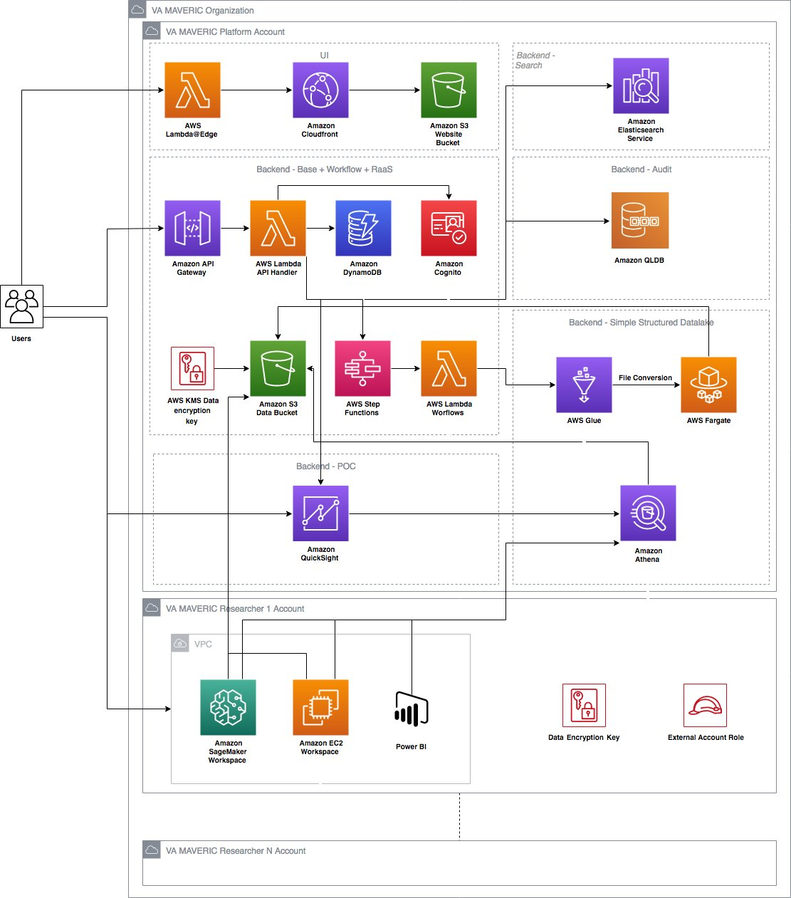

<!DOCTYPE html>
<html lang="en">
<head>
<meta charset="UTF-8">
<meta name="viewport" content="width=device-width, initial-scale=1.0">
<title>VA MAVERIC — AWS Research Platform Evolution 2020→2026</title>
<meta name="description" content="VA MAVERIC research enclave platform on AWS, modernized from 2020-2021 to 2026 — a case study by John Carlo Cueva">

<link rel="preconnect" href="https://fonts.googleapis.com">
<link rel="preconnect" href="https://fonts.gstatic.com" crossorigin>
<link href="https://fonts.googleapis.com/css2?family=Fraunces:ital,opsz,wght@0,9..144,300..700;1,9..144,300..700&family=IBM+Plex+Sans:wght@400;500;600&family=IBM+Plex+Mono:wght@400;500&display=swap" rel="stylesheet">

<style>
:root {
  --paper: #F3EEE2;
  --paper-soft: #F7F2E7;
  --surface: #FDFAF2;
  --ink: #1A1B1D;
  --ink-muted: #5A5D5C;
  --ink-faded: #8F9089;
  --rule: rgba(26, 27, 29, 0.14);
  --rule-soft: rgba(26, 27, 29, 0.06);

  /* AWS-themed accent: warm terracotta + amber rather than Azure's teal */
  --accent-900: #4A1B0C;
  --accent-700: #A64D1B;
  --accent-500: #C96730;
  --accent-50: #F2E1D4;
  --amber-700: #96680B;
  --amber-50: #F2E6C4;
  --slate-900: #1F2D2E;
  --slate-700: #3A4A4B;
  --slate-50: #E0E4E2;
  --sage-700: #5A6D3F;
  --sage-50: #E8EDD9;

  --font-display: 'Fraunces', Georgia, serif;
  --font-body: 'IBM Plex Sans', -apple-system, sans-serif;
  --font-mono: 'IBM Plex Mono', 'SF Mono', monospace;
}

* { box-sizing: border-box; margin: 0; padding: 0; }
html { font-size: 16px; -webkit-font-smoothing: antialiased; -moz-osx-font-smoothing: grayscale; }

body {
  font-family: var(--font-body);
  color: var(--ink);
  background: var(--paper);
  line-height: 1.6;
  min-height: 100vh;
  background-image:
    linear-gradient(to right, var(--rule-soft) 1px, transparent 1px),
    linear-gradient(to bottom, var(--rule-soft) 1px, transparent 1px);
  background-size: 56px 56px;
}

.wrap { max-width: 1200px; margin: 0 auto; padding: 0 2rem; }

/* === Header === */
.site-head {
  border-bottom: 1px solid var(--rule);
  padding: 1.25rem 0;
  position: sticky;
  top: 0;
  z-index: 50;
  backdrop-filter: blur(8px);
  background: rgba(243, 238, 226, 0.92);
}
.site-head-row { display: flex; align-items: center; justify-content: space-between; gap: 2rem; }
.brand {
  font-family: var(--font-display);
  font-weight: 500;
  font-style: italic;
  font-size: 1.25rem;
  letter-spacing: -0.01em;
  color: var(--ink);
  text-decoration: none;
}
.brand span {
  font-style: normal;
  font-family: var(--font-mono);
  font-size: 0.75rem;
  color: var(--ink-faded);
  margin-left: 0.5rem;
  letter-spacing: 0.05em;
}
.site-nav { display: flex; gap: 1.5rem; font-size: 0.875rem; align-items: center; }
.site-nav a {
  color: var(--ink-muted);
  text-decoration: none;
  transition: color 0.15s;
}
.site-nav a:hover { color: var(--accent-700); }
.case-switcher {
  display: inline-flex;
  align-items: center;
  gap: 0.5rem;
  padding: 0.4rem 0.75rem;
  border: 1px solid var(--rule);
  border-radius: 2px;
  background: var(--surface);
  font-family: var(--font-mono);
  font-size: 0.7rem;
  text-transform: uppercase;
  letter-spacing: 0.08em;
  color: var(--ink-muted);
  text-decoration: none;
  transition: all 0.15s;
}
.case-switcher:hover { background: var(--ink); color: var(--paper-soft); border-color: var(--ink); }
.case-switcher .arrow { font-size: 0.85rem; }

/* === Hero === */
.hero { padding: 5rem 0 4rem; }
.kicker {
  font-family: var(--font-mono);
  font-size: 0.75rem;
  text-transform: uppercase;
  letter-spacing: 0.18em;
  color: var(--accent-700);
  margin-bottom: 1.5rem;
  display: inline-flex;
  align-items: center;
  gap: 0.75rem;
}
.kicker::before {
  content: "";
  width: 2rem;
  height: 1px;
  background: var(--accent-700);
}
.hero h1 {
  font-family: var(--font-display);
  font-weight: 400;
  font-size: clamp(2.5rem, 5.5vw, 4.25rem);
  line-height: 1.02;
  letter-spacing: -0.025em;
  color: var(--ink);
  max-width: 22ch;
  margin-bottom: 1.75rem;
}
.hero h1 em {
  font-style: italic;
  color: var(--accent-700);
  font-weight: 300;
}
.hero-lede {
  font-family: var(--font-display);
  font-weight: 300;
  font-size: 1.375rem;
  line-height: 1.5;
  color: var(--ink-muted);
  max-width: 60ch;
  margin-bottom: 2.5rem;
}
.byline {
  display: flex;
  align-items: baseline;
  gap: 1rem;
  padding-top: 1.25rem;
  border-top: 1px solid var(--rule);
  max-width: 32rem;
  font-size: 0.875rem;
  color: var(--ink-muted);
  flex-wrap: wrap;
}
.byline strong { color: var(--ink); font-weight: 500; }
.byline .sep { color: var(--ink-faded); }
.byline .mono { font-family: var(--font-mono); font-size: 0.8125rem; color: var(--ink-faded); }

/* === Section === */
section { padding: 3rem 0; }
.section-label {
  display: flex;
  align-items: baseline;
  gap: 1rem;
  margin-bottom: 2rem;
  padding-bottom: 1rem;
  border-bottom: 1px solid var(--rule);
  flex-wrap: wrap;
}
.section-num {
  font-family: var(--font-mono);
  font-size: 0.75rem;
  letter-spacing: 0.12em;
  color: var(--ink-faded);
}
.section-title {
  font-family: var(--font-display);
  font-weight: 400;
  font-size: 1.875rem;
  letter-spacing: -0.015em;
  color: var(--ink);
}
.section-sub {
  font-family: var(--font-display);
  font-style: italic;
  font-weight: 300;
  color: var(--ink-muted);
  margin-left: auto;
  font-size: 1rem;
}

/* === View Toggle === */
.toggle-bar {
  display: flex;
  align-items: center;
  justify-content: space-between;
  gap: 2rem;
  flex-wrap: wrap;
  margin-bottom: 2rem;
}
.toggle {
  display: inline-flex;
  background: var(--surface);
  border: 1px solid var(--rule);
  border-radius: 2px;
  padding: 3px;
  gap: 2px;
}
.toggle button {
  font-family: var(--font-mono);
  font-size: 0.75rem;
  text-transform: uppercase;
  letter-spacing: 0.08em;
  padding: 0.625rem 1.125rem;
  background: transparent;
  border: none;
  color: var(--ink-muted);
  cursor: pointer;
  transition: all 0.15s;
  border-radius: 1px;
}
.toggle button:hover { color: var(--ink); }
.toggle button.active {
  background: var(--ink);
  color: var(--paper-soft);
}

.hint {
  font-family: var(--font-display);
  font-style: italic;
  font-weight: 300;
  color: var(--ink-muted);
  font-size: 0.9375rem;
}
.hint strong {
  font-style: normal;
  font-family: var(--font-mono);
  font-size: 0.75rem;
  text-transform: uppercase;
  letter-spacing: 0.08em;
  color: var(--accent-700);
  font-weight: 500;
  margin-right: 0.5rem;
  padding: 0.15rem 0.5rem;
  background: var(--accent-50);
  border-radius: 2px;
}

/* === Diagram frames === */
.diagram-frame {
  background: var(--surface);
  border: 1px solid var(--rule);
  padding: 2rem;
  position: relative;
}
.diagram-frame.split { display: grid; grid-template-columns: 1fr 1fr; gap: 0; padding: 0; overflow: hidden; }
.diagram-frame.split > div { padding: 2rem; }
.diagram-frame.split > div:first-child { border-right: 1px solid var(--rule); }
.diagram-label {
  font-family: var(--font-mono);
  font-size: 0.6875rem;
  text-transform: uppercase;
  letter-spacing: 0.12em;
  color: var(--ink-faded);
  margin-bottom: 1rem;
  display: flex;
  align-items: center;
  gap: 0.75rem;
}
.diagram-label .year {
  font-family: var(--font-display);
  font-style: italic;
  font-weight: 400;
  font-size: 1.125rem;
  letter-spacing: -0.01em;
  color: var(--ink);
  text-transform: none;
}
.diagram-label.before .year { color: var(--accent-700); }
.diagram-label.after .year { color: var(--slate-700); }
.before-img { width: 100%; height: auto; display: block; border: 1px solid var(--rule-soft); border-radius: 2px; }
.after-svg-wrap {
  width: 100%;
  display: flex;
  justify-content: center;
}
.after-svg-wrap svg { max-width: 100%; height: auto; }

@media (max-width: 900px) {
  .diagram-frame.split { grid-template-columns: 1fr; }
  .diagram-frame.split > div:first-child { border-right: none; border-bottom: 1px solid var(--rule); }
}

/* === SVG node styles === */
.svg-th { font-family: var(--font-body); font-size: 14px; font-weight: 500; }
.svg-ts { font-family: var(--font-body); font-size: 11px; font-weight: 400; }
.svg-arr { stroke: var(--ink-muted); stroke-width: 1.25; fill: none; }
.svg-container { fill: none; stroke: var(--ink-faded); stroke-width: 0.75; stroke-dasharray: 4 3; }
.svg-sub-container { fill: none; stroke: var(--ink-faded); stroke-width: 0.5; stroke-dasharray: 3 3; opacity: 0.6; }
.svg-region-label { font-family: var(--font-mono); font-size: 10px; fill: var(--ink-faded); letter-spacing: 0.08em; }

.node-group { cursor: pointer; transition: filter 0.15s ease; }
.node-group:hover { filter: brightness(0.96); }
.node-group:hover rect { stroke-width: 1.25; }

/* AWS-themed color classes */
.c-amber rect { fill: var(--amber-50); stroke: var(--amber-700); stroke-width: 0.75; }
.c-amber .svg-th { fill: #5C400A; }
.c-amber .svg-ts { fill: var(--amber-700); }
.c-coral rect { fill: var(--accent-50); stroke: var(--accent-700); stroke-width: 0.75; }
.c-coral .svg-th { fill: var(--accent-900); }
.c-coral .svg-ts { fill: var(--accent-700); }
.c-slate rect { fill: var(--slate-50); stroke: var(--slate-700); stroke-width: 0.75; }
.c-slate .svg-th { fill: var(--slate-900); }
.c-slate .svg-ts { fill: var(--slate-700); }
.c-gray rect { fill: var(--paper-soft); stroke: var(--ink-muted); stroke-width: 0.75; }
.c-gray .svg-th { fill: var(--ink); }
.c-gray .svg-ts { fill: var(--ink-muted); }
.c-sage rect { fill: var(--sage-50); stroke: var(--sage-700); stroke-width: 0.75; }
.c-sage .svg-th { fill: #2D3920; }
.c-sage .svg-ts { fill: var(--sage-700); }

/* === Changes grid === */
.changes-grid {
  display: grid;
  grid-template-columns: repeat(4, 1fr);
  gap: 1.25rem;
}
@media (max-width: 900px) {
  .changes-grid { grid-template-columns: 1fr; }
}
.change-card {
  background: var(--surface);
  border: 1px solid var(--rule);
  padding: 1.5rem;
  position: relative;
}
.change-card-head {
  font-family: var(--font-mono);
  font-size: 0.6875rem;
  text-transform: uppercase;
  letter-spacing: 0.12em;
  margin-bottom: 1rem;
  padding-bottom: 0.75rem;
  border-bottom: 1px solid var(--rule);
  display: flex;
  align-items: center;
  gap: 0.5rem;
}
.dot {
  width: 8px;
  height: 8px;
  border-radius: 50%;
  flex-shrink: 0;
}
.dot.kept { background: var(--ink-muted); }
.dot.renamed { background: var(--amber-700); }
.dot.added { background: var(--sage-700); }
.dot.dropped { background: var(--accent-700); }
.change-list { list-style: none; display: flex; flex-direction: column; gap: 0.875rem; }
.change-list li { font-size: 0.875rem; color: var(--ink); line-height: 1.5; }
.change-list .old {
  font-family: var(--font-mono);
  font-size: 0.8125rem;
  color: var(--ink-faded);
  text-decoration: line-through;
  text-decoration-color: var(--accent-500);
  display: block;
  margin-bottom: 0.125rem;
}
.change-list .new {
  font-family: var(--font-mono);
  font-size: 0.8125rem;
  color: var(--slate-700);
  font-weight: 500;
}
.change-list .note {
  display: block;
  font-size: 0.8125rem;
  color: var(--ink-muted);
  margin-top: 0.25rem;
  font-style: italic;
  font-family: var(--font-display);
}

/* === About section === */
.about-grid {
  display: grid;
  grid-template-columns: 1fr 2fr;
  gap: 3rem;
  align-items: start;
}
@media (max-width: 900px) {
  .about-grid { grid-template-columns: 1fr; }
}
.about-aside {
  font-family: var(--font-mono);
  font-size: 0.75rem;
  text-transform: uppercase;
  letter-spacing: 0.1em;
  color: var(--ink-faded);
  padding-top: 0.5rem;
  border-top: 2px solid var(--ink);
}
.about-body p {
  font-family: var(--font-display);
  font-weight: 300;
  font-size: 1.1875rem;
  line-height: 1.65;
  color: var(--ink);
  margin-bottom: 1.25rem;
}
.about-body p:first-child::first-letter {
  font-size: 3.75rem;
  font-weight: 400;
  float: left;
  line-height: 1;
  padding: 0.5rem 0.75rem 0 0;
  color: var(--accent-700);
  font-style: italic;
}

/* === Personas card === */
.personas {
  display: grid;
  grid-template-columns: repeat(3, 1fr);
  gap: 1.25rem;
  margin-top: 2rem;
}
@media (max-width: 900px) {
  .personas { grid-template-columns: 1fr; }
}
.persona-card {
  background: var(--surface);
  border: 1px solid var(--rule);
  padding: 1.5rem;
  border-top: 3px solid var(--accent-700);
}
.persona-card:nth-child(2) { border-top-color: var(--amber-700); }
.persona-card:nth-child(3) { border-top-color: var(--slate-700); }
.persona-name {
  font-family: var(--font-display);
  font-size: 1.375rem;
  font-weight: 400;
  letter-spacing: -0.01em;
  margin-bottom: 0.25rem;
}
.persona-role {
  font-family: var(--font-mono);
  font-size: 0.6875rem;
  text-transform: uppercase;
  letter-spacing: 0.12em;
  color: var(--ink-faded);
  margin-bottom: 1rem;
  padding-bottom: 0.75rem;
  border-bottom: 1px solid var(--rule);
}
.persona-card ul {
  list-style: none;
  display: flex;
  flex-direction: column;
  gap: 0.5rem;
}
.persona-card li {
  font-size: 0.875rem;
  color: var(--ink);
  padding-left: 1rem;
  position: relative;
  line-height: 1.5;
}
.persona-card li::before {
  content: "—";
  position: absolute;
  left: 0;
  color: var(--accent-700);
}

/* === Modal === */
.modal-backdrop {
  position: fixed;
  inset: 0;
  background: rgba(26, 27, 29, 0.4);
  z-index: 100;
  opacity: 0;
  pointer-events: none;
  transition: opacity 0.2s;
}
.modal-backdrop.open { opacity: 1; pointer-events: all; }
.modal-panel {
  position: fixed;
  top: 0;
  right: 0;
  bottom: 0;
  width: min(560px, 100%);
  background: var(--paper-soft);
  z-index: 101;
  transform: translateX(100%);
  transition: transform 0.28s cubic-bezier(0.32, 0.72, 0.32, 0.96);
  overflow-y: auto;
  border-left: 1px solid var(--rule);
  display: flex;
  flex-direction: column;
}
.modal-panel.open { transform: translateX(0); }
.modal-header {
  padding: 2rem 2.5rem 1.5rem;
  border-bottom: 1px solid var(--rule);
  background: var(--paper);
  position: sticky;
  top: 0;
  z-index: 2;
}
.modal-close {
  position: absolute;
  top: 1.5rem;
  right: 1.5rem;
  width: 2rem;
  height: 2rem;
  background: transparent;
  border: 1px solid var(--rule);
  color: var(--ink-muted);
  cursor: pointer;
  border-radius: 50%;
  display: flex;
  align-items: center;
  justify-content: center;
  font-size: 1rem;
  transition: all 0.15s;
  font-family: var(--font-body);
}
.modal-close:hover { background: var(--ink); color: var(--paper-soft); border-color: var(--ink); }
.modal-category {
  font-family: var(--font-mono);
  font-size: 0.6875rem;
  text-transform: uppercase;
  letter-spacing: 0.12em;
  color: var(--ink-faded);
  margin-bottom: 0.75rem;
}
.modal-title {
  font-family: var(--font-display);
  font-weight: 400;
  font-size: 1.875rem;
  letter-spacing: -0.02em;
  color: var(--ink);
  line-height: 1.1;
  padding-right: 3rem;
}
.modal-title em { font-style: italic; color: var(--accent-700); font-weight: 300; }
.modal-summary {
  font-family: var(--font-display);
  font-style: italic;
  font-weight: 300;
  font-size: 1.0625rem;
  line-height: 1.55;
  color: var(--ink-muted);
  margin-top: 1rem;
}
.modal-body { padding: 2rem 2.5rem 3rem; }
.modal-block { margin-bottom: 2rem; }
.modal-block-label {
  font-family: var(--font-mono);
  font-size: 0.6875rem;
  text-transform: uppercase;
  letter-spacing: 0.12em;
  color: var(--ink-faded);
  margin-bottom: 0.875rem;
  padding-bottom: 0.5rem;
  border-bottom: 1px solid var(--rule);
  display: flex;
  align-items: center;
  gap: 0.5rem;
}
.modal-block p {
  font-size: 0.9375rem;
  line-height: 1.65;
  color: var(--ink);
  margin-bottom: 0.75rem;
}
.modal-block ul {
  list-style: none;
  display: flex;
  flex-direction: column;
  gap: 0.625rem;
}
.modal-block li {
  font-size: 0.875rem;
  line-height: 1.55;
  color: var(--ink);
  padding-left: 1.25rem;
  position: relative;
}
.modal-block li::before {
  content: "";
  position: absolute;
  left: 0;
  top: 0.625rem;
  width: 0.5rem;
  height: 1px;
  background: var(--accent-700);
}
.modal-block code {
  font-family: var(--font-mono);
  font-size: 0.8125rem;
  background: var(--accent-50);
  padding: 0.1rem 0.375rem;
  border-radius: 2px;
  color: var(--accent-700);
}
.modal-block .pill {
  display: inline-flex;
  align-items: center;
  gap: 0.375rem;
  font-family: var(--font-mono);
  font-size: 0.6875rem;
  text-transform: uppercase;
  letter-spacing: 0.1em;
  padding: 0.25rem 0.625rem;
  border-radius: 2px;
  font-weight: 500;
}
.pill.new { background: var(--sage-50); color: var(--sage-700); }
.pill.renamed { background: var(--amber-50); color: var(--amber-700); }
.pill.replaced { background: var(--accent-50); color: var(--accent-700); }
.pill.kept { background: var(--paper); color: var(--ink-muted); border: 1px solid var(--rule); }

/* === Footer === */
footer {
  border-top: 1px solid var(--rule);
  padding: 3rem 0;
  margin-top: 4rem;
  background: var(--paper-soft);
}
.foot-grid { display: flex; justify-content: space-between; align-items: baseline; gap: 2rem; flex-wrap: wrap; }
.foot-grid p { font-size: 0.875rem; color: var(--ink-muted); }
.foot-grid .mono { font-family: var(--font-mono); font-size: 0.75rem; color: var(--ink-faded); }
.foot-brand {
  font-family: var(--font-display);
  font-style: italic;
  font-size: 1rem;
  color: var(--ink);
}

@keyframes fadeUp {
  from { opacity: 0; transform: translateY(12px); }
  to { opacity: 1; transform: translateY(0); }
}
.hero > * { animation: fadeUp 0.6s ease-out both; }
.hero > *:nth-child(1) { animation-delay: 0.05s; }
.hero > *:nth-child(2) { animation-delay: 0.15s; }
.hero > *:nth-child(3) { animation-delay: 0.25s; }
.hero > *:nth-child(4) { animation-delay: 0.35s; }

::-webkit-scrollbar { width: 10px; height: 10px; }
::-webkit-scrollbar-track { background: var(--paper); }
::-webkit-scrollbar-thumb { background: var(--ink-faded); border: 3px solid var(--paper); border-radius: 5px; }
::-webkit-scrollbar-thumb:hover { background: var(--ink-muted); }

@media (max-width: 640px) {
  .wrap { padding: 0 1.25rem; }
  .site-nav { display: none; }
  .case-switcher { display: none; }
  section { padding: 2rem 0; }
  .hero { padding: 3rem 0 2.5rem; }
  .modal-panel { width: 100%; }
  .modal-header, .modal-body { padding-left: 1.5rem; padding-right: 1.5rem; }
  .about-body p:first-child::first-letter { font-size: 2.75rem; }
}
</style>
</head>
<body>
<div id="root"></div>

<script src="https://unpkg.com/react@18/umd/react.production.min.js" crossorigin></script>
<script src="https://unpkg.com/react-dom@18/umd/react-dom.production.min.js" crossorigin></script>
<script src="https://unpkg.com/@babel/standalone/babel.min.js"></script>

<script type="text/babel">
const { useState, useEffect, useCallback } = React;

/* =====================================================================
   SERVICE DATA — each service shows role, evolution, and talking points
   ===================================================================== */

const SERVICES = {
  cloudfront: {
    name: "Amazon CloudFront",
    altName: "+ Lambda@Edge",
    category: "UI delivery",
    status: "kept",
    summary: "Global CDN serving the platform UI from an S3 origin, with Lambda@Edge handling auth header injection and viewer request rewriting at the edge.",
    role: "The MAVERIC platform UI is a static React app deployed to an S3 bucket and served globally through CloudFront. Lambda@Edge runs at edge locations to handle auth-aware request routing — for example, redirecting unauthenticated users to the Cognito sign-in flow before they ever reach the origin. WAF in front of CloudFront handles bot filtering, geo restrictions, and rate limiting.",
    evolution: "Pattern unchanged. Lambda@Edge has matured significantly — longer execution timeouts, more flexible runtimes, and CloudFront Functions added in 2021 as a lighter-weight alternative for simple header manipulation at lower cost.",
    talking: [
      "Static site deployment is still the right pattern for an admin/researcher UI",
      "CloudFront Functions for cheap header rewrites; Lambda@Edge when you need full Node/Python",
      "WAF v2 in front for managed rule groups (OWASP, anonymous IP, bot control)",
      "Origin Access Control replaced legacy OAI in 2022 for S3 origins",
      "Real-Time Logs and CloudWatch metrics for operational visibility"
    ]
  },
  apigw: {
    name: "API Gateway",
    altName: "+ AWS Lambda",
    category: "Control plane API",
    status: "evolved",
    summary: "The platform's REST API. Every action a user takes — registering, requesting dataset access, provisioning an environment, requesting data extraction — flows through an API Gateway endpoint backed by Lambda functions.",
    role: "API Gateway provides the front door for the entire platform — authentication via Cognito JWT authorizers, throttling per identity, request validation, and routing to Lambda. Each Lambda function implements a discrete capability: user registration, dataset CRUD, environment provisioning (which kicks off Step Functions), data extraction request handling. CloudWatch Logs and X-Ray for tracing across the call graph.",
    evolution: "REST APIs were the right call in 2020. Today, HTTP APIs (GA in 2020, matured since) are typically preferred for new builds — about 70% cheaper, faster cold starts, and simpler JWT integration with Cognito. Lambda has added SnapStart for Java, response streaming, container image deployments up to 10GB, and improved cold-start performance broadly.",
    talking: [
      "HTTP APIs vs REST APIs: choose HTTP API for new builds unless you need API keys, request validation, or WAF integration",
      "Lambda authorizers vs Cognito JWT authorizers — Cognito is simpler when your users are already in a User Pool",
      "Provisioned Concurrency or SnapStart to eliminate cold starts on critical paths",
      "Lambda Powertools libraries (Python/TypeScript/Java) for structured logging, tracing, metrics",
      "Step Functions for any workflow longer than a single Lambda invocation"
    ]
  },
  dynamodb: {
    name: "Amazon DynamoDB",
    category: "Metadata store",
    status: "kept",
    summary: "Stores all platform metadata: users, datasets, dataset access permissions, environment provisioning state, extraction requests. Single-digit-millisecond reads at scale.",
    role: "DynamoDB is the platform's source of truth for control-plane state. A single-table design with GSIs handles most access patterns — list datasets by owner, list environments by researcher, list pending extraction requests by data steward. Streams trigger Lambdas for downstream effects: when a dataset is created, push it to OpenSearch for full-text search; when an extraction request is approved, kick off the data movement Step Function.",
    evolution: "Still the right call for this workload. On-demand pricing makes capacity planning a non-issue; PITR (point-in-time recovery) is now standard; DynamoDB Streams + Lambda is a battle-tested pattern. Global Tables for multi-region deployments matured significantly. Zero-ETL integrations (added 2023) push DynamoDB data into OpenSearch and Redshift without custom plumbing.",
    talking: [
      "Single-table design with composite keys and GSIs for the most common access patterns",
      "On-demand mode eliminates capacity planning for variable workloads",
      "Point-In-Time Recovery for any production table — no excuse not to enable it",
      "Streams + Lambda for change data capture and downstream side effects",
      "Zero-ETL to OpenSearch removes a class of plumbing code"
    ]
  },
  cognito: {
    name: "Amazon Cognito",
    altName: "User Pools",
    category: "User authentication",
    status: "kept",
    summary: "User-facing authentication. Researchers self-register, admins approve, and federated identities (PIV, CAC, SAML to Active Directory) cover internal VA users.",
    role: "Cognito User Pools manage the platform's user identities. The original requirement called out three personas (Administrator, Data Steward, Researcher with internal/external sub-types); Cognito handles the auth and role attribution while DynamoDB stores the role-specific metadata. SAML federation to VA Active Directory covers internal users with PIV/CAC; the local user pool covers external researcher accounts. JWT tokens flow into API Gateway authorizers.",
    evolution: "Cognito has had a quiet but steady evolution — better support for advanced security features, improved SAML/OIDC federation, M2M tokens, and tighter integration with API Gateway. The 2024 console redesign and pricing tier overhaul simplified the offering. For new builds, Cognito + IAM Identity Center is still the right pattern: Cognito for the application user pool, Identity Center for AWS workforce access.",
    talking: [
      "User Pools for application identity, Identity Pools only when you need temporary AWS credentials",
      "SAML federation for VA enterprise identity (PIV/CAC) — Active Directory via AD Connector",
      "Advanced Security Features for compromised credentials, adaptive auth, MFA enforcement",
      "Hosted UI for self-service flows (registration, password reset) without writing UI code",
      "Custom triggers (Pre Sign-up, Post Confirmation, Pre Token Generation) for the approval workflow"
    ]
  },
  opensearch: {
    name: "Amazon OpenSearch Service",
    altName: "formerly Elasticsearch Service",
    category: "Search",
    status: "renamed",
    summary: "Full-text search across dataset metadata. When a researcher searches for available datasets to request access to, this is what powers the autocomplete, faceting, and ranking.",
    role: "Every dataset in the platform has rich metadata — title, description, owner, classification, tags, schema. DynamoDB Streams + Lambda push that metadata into an OpenSearch index. Researchers searching the UI hit the OpenSearch domain through a Lambda search proxy with their identity and role evaluated for filtering. Faceted search by classification, owner, modality, and date is the typical research workflow.",
    evolution: "Renamed from Amazon Elasticsearch Service in September 2021 following the Elastic license change — Amazon forked Elasticsearch 7.10 and continued development as OpenSearch. The service has expanded substantially: vector search and k-NN for semantic retrieval, OpenSearch Serverless (2023) for variable workloads, OpenSearch Service ML for embeddings and inference. For a healthcare research platform today, vector search alongside lexical search is genuinely useful for semantic dataset discovery.",
    talking: [
      "Fork happened September 2021; the Elastic-licensed Elasticsearch and OpenSearch have diverged",
      "Vector search added for semantic retrieval — useful for dataset description matching",
      "Serverless tier for variable workloads where capacity planning is a burden",
      "Fine-grained access control via internal user database or IAM",
      "OpenSearch Dashboards for operational visibility into the index"
    ]
  },
  cloudtrail: {
    name: "AWS CloudTrail Lake",
    altName: "replaces Amazon QLDB",
    category: "Immutable audit",
    status: "replaced",
    summary: "Immutable, queryable audit log for the platform. Every administrative action — user approvals, dataset access grants, extraction approvals — captured in a tamper-evident store with SQL query.",
    role: "The 2020 design used Amazon QLDB (Quantum Ledger Database) for an immutable audit ledger of platform actions — who approved which dataset access, who triggered which extraction request, when. The 2026 replacement is CloudTrail Lake — a managed data store specifically for audit event data, with cryptographic integrity validation, multi-year retention, and SQL query through Athena-compatible syntax. Custom event streams from the platform Lambdas write into a CloudTrail Lake event data store alongside management-event AWS API logs, giving a unified audit view.",
    evolution: "AWS announced QLDB end-of-support effective July 31, 2025 — meaning the original design's audit store is being retired. CloudTrail Lake (launched November 2022) is AWS's recommended replacement for the immutable-audit use case. It handles the tamper-evident requirements that QLDB met (cryptographic verification, append-only) while providing better query economics and integration with the broader CloudTrail ecosystem.",
    talking: [
      "QLDB is being retired — July 31, 2025 end-of-support is the migration forcing function",
      "CloudTrail Lake handles the immutable-audit use case with cryptographic integrity",
      "SQL-based queries (Athena-compatible) for ad-hoc audit investigation",
      "Up to 10 years of retention configurable per event data store",
      "Combines management events, data events, and custom application events in one queryable surface"
    ],
    compliance: "For HIPAA, FedRAMP, and HITRUST audit requirements, the immutable audit trail is non-negotiable. CloudTrail Lake's cryptographic verification provides the tamper-evident property auditors look for. Document your event data store retention, integrity validation cadence, and access controls as part of your control evidence."
  },
  s3lake: {
    name: "Amazon S3",
    altName: "+ AWS Lake Formation",
    category: "Data lake",
    status: "kept",
    summary: "All datasets live in S3, organized as a medallion lake (raw, conformed, curated). Lake Formation enforces row, column, and table-level access controls across accounts.",
    role: "S3 is the universal data substrate. Datasets land in a raw bronze zone with KMS encryption; Glue jobs cleanse and conform data into silver; Data Stewards curate gold-tier datasets ready for researcher use. Lake Formation registers the S3 paths, attaches LF-Tags for classification (PHI, PII, public), and enforces fine-grained permissions — researcher A sees columns and rows for their assigned dataset only. Cross-account sharing via Lake Formation lets researcher accounts query Platform Account data without copying it.",
    evolution: "S3 itself is unchanged — still the right call. What's transformed is the governance layer. Lake Formation in 2020 was a year old and barely usable; by 2026 it's mature, with LF-Tags for tag-based access control (TBAC), column-level filters, row filters, named resource grants, and cross-account sharing through AWS RAM. Combined with DataZone, the catalog and access plane is finally cohesive.",
    talking: [
      "Medallion architecture: bronze (raw) → silver (conformed) → gold (curated) zones",
      "LF-Tags for tag-based access control rather than per-resource grants — scales to thousands of datasets",
      "Cross-account sharing via Lake Formation + AWS RAM, no data copy",
      "S3 Object Lambda for transformations on read (PHI redaction, format conversion)",
      "S3 Access Points and Multi-Region Access Points for application isolation"
    ]
  },
  glue: {
    name: "AWS Glue",
    altName: "+ Step Functions",
    category: "Transformation & orchestration",
    status: "kept",
    summary: "Glue handles ETL jobs, format conversion (CSV → Parquet), and schema discovery. Step Functions orchestrates platform workflows — environment provisioning, data extraction approval, dataset ingestion.",
    role: "When a Data Steward registers a new dataset, a Step Function orchestrates the ingestion: validate the source, run a Glue crawler to infer schema, kick off a Glue job to convert to Parquet and partition appropriately, register the table in the Glue Data Catalog, attach LF-Tags, push metadata to OpenSearch. When a researcher provisions an environment, another Step Function orchestrates account preparation, IAM role creation, WorkSpaces deployment, and notification. Step Functions handles the long-running, multi-step nature of these flows; Glue handles the data-shaping primitives.",
    evolution: "Both services have matured substantially. Glue added DataBrew (visual prep), Glue Studio (visual job editor), Glue Data Quality, native Apache Iceberg support, and a serverless Spark engine that's cheaper and faster. Step Functions added Express Workflows (2019) for high-volume short-running flows, Distributed Map (2022) for large-scale parallelism, and the ability to invoke 200+ AWS APIs directly without Lambda glue code.",
    talking: [
      "Glue Studio for visual ETL development — accessible to data engineers without deep Spark expertise",
      "Glue Data Quality for automated rule-based validation",
      "Step Functions Express Workflows for high-throughput, short-duration flows; Standard for long-running",
      "Distributed Map for parallel processing across thousands of items",
      "Direct AWS service integrations eliminate most boilerplate Lambda functions"
    ]
  },
  healthomics: {
    name: "AWS HealthOmics",
    category: "Genomic data platform",
    status: "new",
    summary: "Purpose-built service for genomic, transcriptomic, and other omics data. Native handling of CRAM, BAM, FASTQ, VCF formats; compliant ready-to-use bioinformatics workflows; analytics through standard SQL.",
    role: "MAVERIC's research focus included genomic data — DNA, genome processing, biomarker analysis. In 2020 that meant raw S3 storage of CRAM and FASTQ files plus custom Spark or SGE workflows for processing. AWS HealthOmics, launched November 2022, is purpose-built for this: Sequence Stores for raw read data with native format awareness, Variant Stores for VCFs queryable through Athena, Annotation Stores for reference data, and managed Workflows that run WDL/Nextflow/CWL pipelines without ParallelCluster. Researchers query variant data through Athena; the platform manages the genomic-specific concerns (compression, indexing, format conversion).",
    evolution: "Didn't exist in 2020 — MAVERIC's design used generic S3 for CRAM/BAM storage, which works but doesn't take advantage of genomic-format awareness, ACTIVE/ARCHIVE tiering for sequence data, or Athena-queryable variant stores. HealthOmics is the natural 2026 modernization for the omics-specific tier of any healthcare research platform.",
    talking: [
      "Sequence Stores: native handling of CRAM, BAM, FASTQ — automatic compression, indexing",
      "Variant Stores: VCFs queryable through Athena with no ETL",
      "Annotation Stores for reference genomes, gene annotations, ClinVar, etc.",
      "Managed Workflows: run WDL, Nextflow, CWL pipelines without managing compute",
      "Ready-to-use workflows from the AWS HealthOmics workflow library",
      "Pricing model rewards archival — unused sequence data drops to deep storage automatically"
    ],
    compliance: "HealthOmics is HIPAA-eligible and FedRAMP-authorized, which matters for VA workloads. The variant-store-as-Athena pattern simplifies the audit story — every query lands in CloudTrail with the IAM principal and the SQL run."
  },
  workspaces: {
    name: "Amazon WorkSpaces",
    altName: "+ AppStream 2.0 (alternative)",
    category: "Endpoint control / VDI",
    status: "new",
    summary: "Managed virtual desktops for researchers. Configured with copy/paste/clipboard restrictions and disabled drive redirection, WorkSpaces enforces no-data-exfiltration at the endpoint level — the technical control that backs DUA contractual prohibitions.",
    role: "The 2020 design relied on per-researcher AWS account isolation plus a manual data extraction approval workflow to keep PHI inside the enclave. That works as a control plane but doesn't enforce no-exfiltration at the endpoint — a researcher with shell access to an EC2 workspace could in principle download data to their laptop. WorkSpaces is the modernization: researchers connect through the WorkSpaces client, the desktop and all data live in the cloud, clipboard and drive redirection are disabled by policy. The data physically cannot leave the enclave through the endpoint.",
    evolution: "WorkSpaces existed in 2020 but wasn't part of the original MAVERIC design — likely because the per-researcher AWS account model was thought to be sufficient isolation. By 2026, the no-exfiltration story is much harder to make without VDI: regulators, auditors, and DUA partners want to see the technical control, not just the access control. AppStream 2.0 (streamed application access) is a lighter-weight alternative when researchers only need a couple of specific tools rather than a full desktop.",
    talking: [
      "Bundle policies disable clipboard, USB, printer, local drive redirection",
      "WorkSpaces for full desktops; AppStream 2.0 when only specific apps need to be reachable",
      "Always-On (per-month) for heavy users; AutoStop (per-hour) for occasional researchers",
      "Custom bundles pre-installed with R, Python, RStudio, the analytical stack each persona needs",
      "Integration with AWS Managed Microsoft AD or AD Connector for identity"
    ],
    compliance: "Data Use Agreements that prohibit data exfiltration require endpoint-level enforcement. Account isolation alone is insufficient — without VDI, there's a path from S3 to a researcher's laptop through download. WorkSpaces closes that path technically, which is what HIPAA, FedRAMP, and most DUAs ultimately want to see."
  },
  sagemaker: {
    name: "Amazon SageMaker",
    altName: "Unified Studio",
    category: "Researcher workspace",
    status: "renamed",
    summary: "The unified analytical environment for researchers — notebooks, ML model development, data prep, governance integration. Replaces the standalone SageMaker Notebooks of the original design.",
    role: "Researchers in their own AWS account spin up a SageMaker Unified Studio domain to do their analytical work. The Studio provides JupyterLab, Code Editor, Athena query workbenches, and ML training notebooks — all accessing curated datasets from the Platform Account through Lake Formation cross-account grants. Compute is on-demand (Studio notebooks, training jobs, inference endpoints), so cost scales with actual use. Governance is integrated via DataZone — the researcher sees only the data products their role allows.",
    evolution: "The original design used Amazon SageMaker Workspace and Amazon EC2 Workspace as separate per-researcher tools. SageMaker Studio (launched 2019) was the first unification; SageMaker Unified Studio (launched re:Invent 2024) is the much more comprehensive version that bundles SageMaker AI, Lake Formation, DataZone, Glue, EMR, and Athena into a single workspace experience. For a 2026 research platform, this is the modern entry point.",
    talking: [
      "Unified Studio brings notebooks, data prep, ML, and BI into a single workspace",
      "Domain-and-project structure mirrors how research teams actually work",
      "On-demand compute eliminates idle EC2/EFS costs from the per-researcher account model",
      "DataZone integration handles dataset discovery and request workflow",
      "Bring-your-own-image for custom analytical stacks (Bioconductor, custom Python envs, etc.)"
    ]
  },
  quicksight: {
    name: "Amazon QuickSight",
    altName: "+ Amazon Q in QuickSight",
    category: "Business intelligence",
    status: "kept",
    summary: "BI and dashboarding for both Data Stewards (dataset usage analytics) and Researchers (in-place data exploration before requesting extraction). Generative AI through Amazon Q for natural language analytics.",
    role: "QuickSight serves two distinct workflows. Data Stewards see analytics on their datasets — access counts, active researchers, query volume. Researchers use QuickSight as one of the 'evaluate before extracting' tools called out in the requirements: explore the shape of a dataset visually before committing to an extraction request. Embedded into the platform UI through QuickSight Embedded for a seamless experience. Amazon Q in QuickSight (added 2023, expanded 2024) lets users ask natural-language questions and get visualizations without writing SQL.",
    evolution: "QuickSight has evolved from a simple BI tool to a credible enterprise option. Q (NLP) launched 2021, Amazon Q in QuickSight (generative analytics) launched 2024 with executive summaries, scenario analysis, and data stories. Embedded analytics matured significantly — session-based pricing makes it economical for platform-internal use. Pixel-perfect reports through paginated reports addressed a long-standing gap.",
    talking: [
      "Embedded analytics for in-platform use without separate authentication",
      "Amazon Q in QuickSight for natural-language Q&A — useful for non-technical Data Stewards",
      "SPICE in-memory engine for fast dashboards; direct query for live operational views",
      "Row-level security based on Cognito user attributes for dataset scoping",
      "Paginated reports for compliance reporting and stakeholder distribution"
    ]
  },
  controltower: {
    name: "AWS Control Tower",
    altName: "+ Account Factory for Terraform",
    category: "Multi-account governance",
    status: "new",
    summary: "Vends researcher accounts on demand with consistent guardrails, security baseline, networking, and SCPs. Replaces the manual account creation in the 2020 design with a managed, repeatable factory.",
    role: "The 2020 architecture diagram shows distinct \"VA MAVERIC Researcher 1 Account\" and \"Researcher N Account\" — the multi-account-per-researcher model is architecturally correct but operationally heavy when done manually. Control Tower (mature by 2026) is the AWS service that automates this: a Lambda triggered from the platform's user approval workflow calls the Account Factory API, an account is provisioned with the standard guardrails attached (SCPs preventing public S3, mandatory encryption, no root user creation), the researcher's IAM Identity Center permission set is assigned, networking is preconfigured.",
    evolution: "Control Tower existed in early form in 2020 but wasn't typically wired into application platforms — most teams provisioned accounts manually through Organizations. By 2026, Account Factory and Account Factory for Terraform (AFT) are the standard pattern for any platform that vends accounts. Customizations for Control Tower (CfCT) extends the service for organization-specific requirements.",
    talking: [
      "Account Factory API integrates into the platform's approval workflow",
      "Account Factory for Terraform (AFT) for fully programmatic, GitOps account management",
      "SCPs as guardrails — preventive controls that can't be bypassed by account admins",
      "Detective controls via Config Rules, Security Hub, GuardDuty across all accounts",
      "Customizations for Control Tower for organization-specific baseline (logging targets, IAM roles)"
    ]
  },
  datazone: {
    name: "Amazon DataZone",
    category: "Data governance & catalog",
    status: "new",
    summary: "Cross-account data catalog, classification, and discovery. The AWS-native equivalent of what Microsoft Purview does on Azure — and the 2026 answer to \"how do researchers find datasets they're allowed to access.\"",
    role: "DataZone is where the dataset lifecycle lives in 2026: Data Stewards publish datasets as 'data products' with rich metadata; Researchers browse the DataZone portal to discover datasets they have access to or can request; subscription requests flow through DataZone's approval workflow back to the Data Steward. The actual access grants are propagated through Lake Formation, so DataZone is the catalog and discovery surface, Lake Formation is the enforcement plane. Classification and lineage scan results inform what's PHI versus public.",
    evolution: "Didn't exist in 2020. The MAVERIC platform built its own catalog (DynamoDB + OpenSearch) and its own subscription workflow (Cognito-protected APIs into Lambda). DataZone (launched 2023, GA expanded 2024) replaces about 60% of that custom code with a managed catalog, request workflow, and governance plane. For new builds, DataZone is the path; for existing platforms, it's a candidate for incremental migration.",
    talking: [
      "Data products as the unit of governance — bundle a table, schema, docs, contact, SLAs",
      "Subscription request workflow replaces hand-rolled access request systems",
      "Federated authentication via IAM Identity Center",
      "Lineage tracked across Glue, Lake Formation, Redshift, and DataZone-aware tools",
      "Business glossaries for terminology consistency across research domains"
    ]
  },
  iamic: {
    name: "AWS IAM Identity Center",
    altName: "formerly AWS SSO",
    category: "Workforce identity",
    status: "renamed",
    summary: "Single sign-on across all AWS accounts in the organization. Permission sets define what each persona can do where; assignments map users (or groups) to accounts and permission sets.",
    role: "Identity Center is the workforce-facing identity plane (Cognito covers application end-users; Identity Center covers AWS-console and CLI access for admins, engineers, and Data Stewards). Permission sets are defined centrally and provisioned across accounts: a Data Steward gets read access to dataset metadata in the Platform Account and admin in their assigned dataset's S3 paths via Lake Formation; a researcher gets access to their own vended researcher account only. SCIM provisioning from VA Active Directory keeps the user list in sync.",
    evolution: "Renamed from AWS SSO to IAM Identity Center in July 2022 to better describe what it actually does (it's not just SSO — it's the workforce-identity plane). Functionally similar but with steady improvements in SAML/OIDC federation, account assignment APIs, and integration with Identity Center–aware services like SageMaker Studio, DataZone, QuickSight, and Q.",
    talking: [
      "Permission sets are the unit of permission — defined once, deployable to many accounts",
      "SCIM for automated user provisioning from corporate IdP (VA AD)",
      "Identity Center–aware applications (SageMaker, DataZone, QuickSight, Q) — single sign-on flows through",
      "Trusted Identity Propagation passes user identity to data services for fine-grained access",
      "External IdP federation via SAML/OIDC is standard"
    ]
  },
  kms: {
    name: "AWS KMS",
    altName: "+ CloudHSM for FIPS 140-2 L3",
    category: "Encryption",
    status: "kept",
    summary: "Customer-managed keys for encryption at rest across the entire platform — S3, DynamoDB, OpenSearch, EBS, RDS, every service holding sensitive data.",
    role: "Every data store in the platform encrypts at rest with customer-managed KMS keys. Per-dataset CMKs let Data Stewards control access at the cryptographic level — revoking a key revokes access to the underlying data even if IAM is misconfigured. KMS Multi-Region Keys for cross-region replication scenarios; KMS Custom Key Stores backed by CloudHSM for FIPS 140-2 Level 3 requirements that some federal workloads demand.",
    talking: [
      "Customer-managed keys (not AWS-managed) for any sensitive data — gives you policy control",
      "Per-dataset CMKs for cryptographic-level access scoping",
      "Multi-Region Keys for replicated data across regions",
      "CloudHSM-backed Custom Key Stores for FIPS 140-2 Level 3 requirements",
      "Key rotation enabled — annual for symmetric keys is standard"
    ]
  }
};

/* =====================================================================
   CHANGES — 2020 → 2026 mapping organized by change type
   ===================================================================== */

const CHANGES = [
  {
    type: "kept",
    title: "Kept as-is",
    items: [
      { new: "Amazon S3", note: "Still the universal data substrate" },
      { new: "AWS Lambda + API Gateway", note: "Now with HTTP APIs, SnapStart, response streaming" },
      { new: "Amazon DynamoDB", note: "Single-table design, on-demand, PITR — same playbook" },
      { new: "Amazon Cognito", note: "User Pools still the right call for app identity" },
      { new: "AWS KMS", note: "Encryption foundation unchanged" },
      { new: "Amazon QuickSight", note: "Now with Amazon Q (generative analytics)" },
      { new: "AWS Step Functions", note: "Plus Express Workflows and Distributed Map" }
    ]
  },
  {
    type: "renamed",
    title: "Renamed by AWS",
    items: [
      { old: "Amazon Elasticsearch Service", new: "Amazon OpenSearch Service", note: "Renamed September 2021 (license fork)" },
      { old: "AWS SSO", new: "AWS IAM Identity Center", note: "Renamed July 2022" },
      { old: "Amazon SageMaker Studio", new: "SageMaker Unified Studio", note: "Re:Invent 2024 — bundles Lake Formation, DataZone, Glue, Athena" }
    ]
  },
  {
    type: "added",
    title: "Added for 2026",
    items: [
      { new: "AWS HealthOmics", note: "Purpose-built for omics — didn't exist in 2020 (launched Nov 2022)" },
      { new: "Amazon WorkSpaces", note: "VDI for endpoint-level no-exfiltration enforcement" },
      { new: "Amazon DataZone", note: "Native data catalog and governance (launched 2023)" },
      { new: "AWS Control Tower + Account Factory", note: "Mature multi-account vending replaces manual provisioning" },
      { new: "AWS Lake Formation expansion", note: "Now mature — TBAC, cross-account, fine-grained" },
      { new: "AWS Clean Rooms", note: "Managed equivalent of MAVERIC's manual extraction approval flow" },
      { new: "AWS PrivateLink everywhere", note: "Service-to-service access without public routes" }
    ]
  },
  {
    type: "dropped",
    title: "Replaced or retired",
    items: [
      { old: "Amazon QLDB", new: "AWS CloudTrail Lake", note: "QLDB end-of-support July 31, 2025" },
      { old: "Sun Grid Engine cluster", new: "HealthOmics Workflows / AWS Batch", note: "SGE replaced by managed batch and omics-specific workflows" },
      { old: "Manual researcher account vending", new: "Control Tower Account Factory", note: "GitOps account management via AFT" },
      { old: "Custom subscription workflow", new: "DataZone subscription requests", note: "Replaces hand-rolled approval system" },
      { old: "Per-researcher EC2 + EFS workspaces", new: "On-demand SageMaker Studio compute", note: "Eliminates idle compute costs" }
    ]
  }
];

/* =====================================================================
   AFTER DIAGRAM — interactive SVG with clickable service nodes
   ===================================================================== */

function AfterDiagram({ onServiceClick }) {
  const nodeProps = (id, ramp = 'amber') => ({
    className: `node-group c-${ramp}`,
    onClick: () => onServiceClick(id),
    role: "button",
    tabIndex: 0,
    onKeyDown: (e) => { if (e.key === 'Enter' || e.key === ' ') { e.preventDefault(); onServiceClick(id); } }
  });

  return (
    <svg width="100%" viewBox="0 0 680 760" xmlns="http://www.w3.org/2000/svg" role="img">
      <title>VA MAVERIC AWS Research Platform — 2026 modernized architecture</title>
      <desc>Interactive architecture diagram. Click any service for details on its role, evolution, and interview talking points.</desc>
      <defs>
        <marker id="arrow" viewBox="0 0 10 10" refX="8" refY="5" markerWidth="6" markerHeight="6" orient="auto-start-reverse">
          <path d="M2 1L8 5L2 9" fill="none" stroke="context-stroke" strokeWidth="1.5" strokeLinecap="round" strokeLinejoin="round"/>
        </marker>
      </defs>

      {/* Users */}
      <g className="c-gray">
        <rect x="40" y="20" width="80" height="34" rx="4" />
        <text className="svg-th" x="80" y="40" textAnchor="middle" dominantBaseline="central">Users</text>
      </g>
      <line x1="80" y1="54" x2="80" y2="80" className="svg-arr" markerEnd="url(#arrow)" />
      <text className="svg-ts" x="92" y="73" style={{fill: 'var(--ink-muted)'}}>3 personas</text>

      {/* AWS Organization (outermost container) */}
      <rect x="40" y="80" width="600" height="640" rx="8" className="svg-container" />
      <text className="svg-region-label" x="55" y="100">AWS ORGANIZATION</text>

      {/* Platform Account */}
      <rect x="60" y="115" width="320" height="490" rx="6" className="svg-sub-container" />
      <text className="svg-region-label" x="220" y="135" textAnchor="middle">VA MAVERIC PLATFORM ACCOUNT</text>

      {/* CloudFront + Lambda@Edge (single full row) */}
      <g {...nodeProps('cloudfront', 'amber')}>
        <rect x="72" y="148" width="296" height="38" rx="3" />
        <text className="svg-th" x="220" y="163" textAnchor="middle" dominantBaseline="central">CloudFront + Lambda@Edge</text>
        <text className="svg-ts" x="220" y="178" textAnchor="middle" dominantBaseline="central">Web UI delivery</text>
      </g>

      {/* API Gateway + Lambda */}
      <g {...nodeProps('apigw', 'amber')}>
        <rect x="72" y="194" width="296" height="38" rx="3" />
        <text className="svg-th" x="220" y="209" textAnchor="middle" dominantBaseline="central">API Gateway + AWS Lambda</text>
        <text className="svg-ts" x="220" y="224" textAnchor="middle" dominantBaseline="central">Control plane API</text>
      </g>

      {/* DynamoDB | Cognito */}
      <g {...nodeProps('dynamodb', 'amber')}>
        <rect x="72" y="240" width="143" height="38" rx="3" />
        <text className="svg-th" x="143.5" y="255" textAnchor="middle" dominantBaseline="central">DynamoDB</text>
        <text className="svg-ts" x="143.5" y="270" textAnchor="middle" dominantBaseline="central">Metadata</text>
      </g>
      <g {...nodeProps('cognito', 'amber')}>
        <rect x="225" y="240" width="143" height="38" rx="3" />
        <text className="svg-th" x="296.5" y="255" textAnchor="middle" dominantBaseline="central">Cognito</text>
        <text className="svg-ts" x="296.5" y="270" textAnchor="middle" dominantBaseline="central">App identity</text>
      </g>

      {/* OpenSearch | CloudTrail Lake */}
      <g {...nodeProps('opensearch', 'amber')}>
        <rect x="72" y="286" width="143" height="38" rx="3" />
        <text className="svg-th" x="143.5" y="301" textAnchor="middle" dominantBaseline="central">OpenSearch</text>
        <text className="svg-ts" x="143.5" y="316" textAnchor="middle" dominantBaseline="central">Search</text>
      </g>
      <g {...nodeProps('cloudtrail', 'coral')}>
        <rect x="225" y="286" width="143" height="38" rx="3" />
        <text className="svg-th" x="296.5" y="301" textAnchor="middle" dominantBaseline="central">CloudTrail Lake</text>
        <text className="svg-ts" x="296.5" y="316" textAnchor="middle" dominantBaseline="central">Audit · replaces QLDB</text>
      </g>

      {/* S3 + Lake Formation (full row) */}
      <g {...nodeProps('s3lake', 'amber')}>
        <rect x="72" y="332" width="296" height="38" rx="3" />
        <text className="svg-th" x="220" y="347" textAnchor="middle" dominantBaseline="central">S3 + Lake Formation</text>
        <text className="svg-ts" x="220" y="362" textAnchor="middle" dominantBaseline="central">Data lake · medallion · TBAC</text>
      </g>

      {/* Glue + Step Functions (full row) */}
      <g {...nodeProps('glue', 'amber')}>
        <rect x="72" y="378" width="296" height="38" rx="3" />
        <text className="svg-th" x="220" y="393" textAnchor="middle" dominantBaseline="central">AWS Glue + Step Functions</text>
        <text className="svg-ts" x="220" y="408" textAnchor="middle" dominantBaseline="central">Transform · orchestrate</text>
      </g>

      {/* HealthOmics (full row, NEW) */}
      <g {...nodeProps('healthomics', 'sage')}>
        <rect x="72" y="424" width="296" height="38" rx="3" />
        <text className="svg-th" x="220" y="439" textAnchor="middle" dominantBaseline="central">AWS HealthOmics</text>
        <text className="svg-ts" x="220" y="454" textAnchor="middle" dominantBaseline="central">Genomic data · new in 2026</text>
      </g>

      {/* QuickSight (full row) */}
      <g {...nodeProps('quicksight', 'amber')}>
        <rect x="72" y="470" width="296" height="38" rx="3" />
        <text className="svg-th" x="220" y="485" textAnchor="middle" dominantBaseline="central">QuickSight + Amazon Q</text>
        <text className="svg-ts" x="220" y="500" textAnchor="middle" dominantBaseline="central">BI · NL analytics</text>
      </g>

      {/* Researcher Account */}
      <rect x="400" y="115" width="220" height="490" rx="6" className="svg-sub-container" />
      <text className="svg-region-label" x="510" y="135" textAnchor="middle">RESEARCHER ACCOUNT (VENDED)</text>

      {/* WorkSpaces VDI */}
      <g {...nodeProps('workspaces', 'sage')}>
        <rect x="412" y="160" width="196" height="58" rx="3" />
        <text className="svg-th" x="510" y="180" textAnchor="middle" dominantBaseline="central">Amazon WorkSpaces</text>
        <text className="svg-ts" x="510" y="200" textAnchor="middle" dominantBaseline="central">VDI · new in 2026</text>
      </g>

      {/* SageMaker Unified Studio */}
      <g {...nodeProps('sagemaker', 'amber')}>
        <rect x="412" y="232" width="196" height="58" rx="3" />
        <text className="svg-th" x="510" y="252" textAnchor="middle" dominantBaseline="central">SageMaker Unified</text>
        <text className="svg-ts" x="510" y="272" textAnchor="middle" dominantBaseline="central">Studio · ML workspace</text>
      </g>

      {/* Cross-account note */}
      <rect x="412" y="306" width="196" height="60" rx="3" fill="none" stroke="var(--ink-faded)" strokeWidth="0.5" strokeDasharray="2 3" />
      <text className="svg-ts" x="510" y="326" textAnchor="middle" style={{fill: 'var(--ink-muted)'}}>Cross-account access</text>
      <text className="svg-ts" x="510" y="342" textAnchor="middle" style={{fill: 'var(--ink-muted)'}}>via Lake Formation</text>
      <text className="svg-ts" x="510" y="358" textAnchor="middle" style={{fill: 'var(--ink-muted)'}}>+ IAM Identity Center</text>

      {/* Researcher N placeholder */}
      <rect x="412" y="385" width="196" height="40" rx="3" fill="none" stroke="var(--ink-faded)" strokeWidth="0.5" strokeDasharray="2 3" />
      <text className="svg-ts" x="510" y="408" textAnchor="middle" style={{fill: 'var(--ink-faded)'}}>Researcher N · vended on demand</text>

      {/* Org-level governance row */}
      <rect x="60" y="620" width="560" height="80" rx="6" className="svg-sub-container" />
      <text className="svg-region-label" x="340" y="640" textAnchor="middle">ORGANIZATION-LEVEL GOVERNANCE &amp; SECURITY</text>

      <g {...nodeProps('controltower', 'sage')}>
        <rect x="74" y="652" width="130" height="40" rx="3" />
        <text className="svg-th" x="139" y="668" textAnchor="middle" dominantBaseline="central">Control Tower</text>
        <text className="svg-ts" x="139" y="683" textAnchor="middle" dominantBaseline="central">Account factory</text>
      </g>
      <g {...nodeProps('datazone', 'sage')}>
        <rect x="214" y="652" width="130" height="40" rx="3" />
        <text className="svg-th" x="279" y="668" textAnchor="middle" dominantBaseline="central">DataZone</text>
        <text className="svg-ts" x="279" y="683" textAnchor="middle" dominantBaseline="central">Catalog · governance</text>
      </g>
      <g {...nodeProps('iamic', 'amber')}>
        <rect x="354" y="652" width="130" height="40" rx="3" />
        <text className="svg-th" x="419" y="668" textAnchor="middle" dominantBaseline="central">Identity Center</text>
        <text className="svg-ts" x="419" y="683" textAnchor="middle" dominantBaseline="central">Workforce SSO</text>
      </g>
      <g {...nodeProps('kms', 'amber')}>
        <rect x="494" y="652" width="112" height="40" rx="3" />
        <text className="svg-th" x="550" y="668" textAnchor="middle" dominantBaseline="central">KMS</text>
        <text className="svg-ts" x="550" y="683" textAnchor="middle" dominantBaseline="central">Encryption keys</text>
      </g>
    </svg>
  );
}

/* =====================================================================
   MODAL — slides in from the right
   ===================================================================== */

function ServiceModal({ serviceId, onClose }) {
  useEffect(() => {
    const onKey = (e) => { if (e.key === 'Escape') onClose(); };
    if (serviceId) window.addEventListener('keydown', onKey);
    return () => window.removeEventListener('keydown', onKey);
  }, [serviceId, onClose]);

  useEffect(() => {
    if (serviceId) document.body.style.overflow = 'hidden';
    else document.body.style.overflow = '';
    return () => { document.body.style.overflow = ''; };
  }, [serviceId]);

  const s = serviceId ? SERVICES[serviceId] : null;
  const open = Boolean(s);

  const statusLabel = (status) => {
    if (status === 'new') return 'new in 2026';
    if (status === 'renamed') return 'renamed';
    if (status === 'replaced') return 'replaced';
    if (status === 'evolved') return 'evolved';
    return 'kept';
  };

  return (
    <>
      <div className={`modal-backdrop ${open ? 'open' : ''}`} onClick={onClose} />
      <aside className={`modal-panel ${open ? 'open' : ''}`} aria-hidden={!open}>
        {s && (
          <>
            <header className="modal-header">
              <button className="modal-close" onClick={onClose} aria-label="Close">✕</button>
              <div className="modal-category">{s.category} · {statusLabel(s.status)}</div>
              <h2 className="modal-title">
                {s.name}
                {s.altName && <em> · {s.altName}</em>}
              </h2>
              <p className="modal-summary">{s.summary}</p>
            </header>
            <div className="modal-body">
              <div className="modal-block">
                <div className="modal-block-label">Role in this architecture</div>
                <p>{s.role}</p>
              </div>

              {s.evolution && (
                <div className="modal-block">
                  <div className="modal-block-label">
                    <span className={`pill ${s.status === 'new' ? 'new' : s.status === 'renamed' ? 'renamed' : s.status === 'replaced' ? 'replaced' : 'kept'}`}>
                      {s.status === 'new' ? 'Added' : s.status === 'renamed' ? 'Renamed' : s.status === 'replaced' ? 'Replaced' : 'Evolved'}
                    </span>
                    What changed from 2020
                  </div>
                  <p>{s.evolution}</p>
                </div>
              )}

              <div className="modal-block">
                <div className="modal-block-label">Interview talking points</div>
                <ul>
                  {s.talking.map((t, i) => <li key={i}>{t}</li>)}
                </ul>
              </div>

              {s.compliance && (
                <div className="modal-block">
                  <div className="modal-block-label">Why compliance drives this choice</div>
                  <p>{s.compliance}</p>
                </div>
              )}
            </div>
          </>
        )}
      </aside>
    </>
  );
}

/* =====================================================================
   APP
   ===================================================================== */

function App() {
  const [view, setView] = useState('after');
  const [selectedService, setSelectedService] = useState(null);

  const onServiceClick = useCallback((id) => setSelectedService(id), []);
  const onCloseModal = useCallback(() => setSelectedService(null), []);

  return (
    <>
      <header className="site-head">
        <div className="wrap site-head-row">
          <a href="#" className="brand">
            John Carlo Cueva<span>ARCHITECTURE CASE STUDY</span>
          </a>
          <nav className="site-nav">
            <a href="#diagrams">Diagrams</a>
            <a href="#changes">Changes</a>
            <a href="#context">Context</a>
            <a href="https://shidokan.github.io/mosiac/" className="case-switcher" target="_blank" rel="noopener">
              <span>Azure case study</span>
              <span className="arrow">↗</span>
            </a>
          </nav>
        </div>
      </header>

      <main>
        <section className="hero">
          <div className="wrap">
            <div className="kicker">Case study · AWS · Healthcare research</div>
            <h1>VA MAVERIC research platform, <em>then and now</em>.</h1>
            <p className="hero-lede">
              An AWS-native research enclave platform I architected in 2020-2021 with the AWS Solution Design team for the Veterans Affairs Million Veteran Program — multi-account isolation per researcher, three-persona role model, and a manual data extraction approval workflow that anticipated AWS Clean Rooms by three years. The 2026 version keeps the architectural shape and modernizes the service substrate.
            </p>
            <div className="byline">
              <strong>John Carlo Cueva</strong>
              <span className="sep">·</span>
              <span>Principal Cloud Architect</span>
              <span className="sep">·</span>
              <span className="mono">JUN 2020 → MAY 2026</span>
            </div>
          </div>
        </section>

        <section id="diagrams">
          <div className="wrap">
            <div className="section-label">
              <span className="section-num">01 —</span>
              <h2 className="section-title">The diagrams</h2>
              <span className="section-sub">click any service for deep details</span>
            </div>

            <div className="toggle-bar">
              <div className="toggle" role="tablist">
                <button className={view === 'before' ? 'active' : ''} onClick={() => setView('before')}>Before · 2020</button>
                <button className={view === 'after' ? 'active' : ''} onClick={() => setView('after')}>After · 2026</button>
                <button className={view === 'split' ? 'active' : ''} onClick={() => setView('split')}>Side-by-side</button>
              </div>
              <div className="hint">
                <strong>Interactive</strong>Click any service in the 2026 diagram
              </div>
            </div>

            {view === 'before' && (
              <div className="diagram-frame">
                <div className="diagram-label before">
                  <span>BEFORE</span>
                  <span className="year">June 2020 · solution design review</span>
                </div>
                
              </div>
            )}

            {view === 'after' && (
              <div className="diagram-frame">
                <div className="diagram-label after">
                  <span>AFTER</span>
                  <span className="year">May 2026 · modernized</span>
                </div>
                <div className="after-svg-wrap">
                  <AfterDiagram onServiceClick={onServiceClick} />
                </div>
              </div>
            )}

            {view === 'split' && (
              <div className="diagram-frame split">
                <div>
                  <div className="diagram-label before">
                    <span>BEFORE</span>
                    <span className="year">June 2020</span>
                  </div>
                  
                </div>
                <div>
                  <div className="diagram-label after">
                    <span>AFTER</span>
                    <span className="year">May 2026</span>
                  </div>
                  <div className="after-svg-wrap">
                    <AfterDiagram onServiceClick={onServiceClick} />
                  </div>
                </div>
              </div>
            )}
          </div>
        </section>

        <section id="changes">
          <div className="wrap">
            <div className="section-label">
              <span className="section-num">02 —</span>
              <h2 className="section-title">What changed</h2>
              <span className="section-sub">2020 AWS estate → 2026 modernized design</span>
            </div>

            <div className="changes-grid">
              {CHANGES.map((col, i) => (
                <div key={i} className="change-card">
                  <div className="change-card-head">
                    <span className={`dot ${col.type}`}></span>
                    {col.title}
                  </div>
                  <ul className="change-list">
                    {col.items.map((item, j) => (
                      <li key={j}>
                        {item.old && <span className="old">{item.old}</span>}
                        <span className="new">{item.new}</span>
                        {item.note && <span className="note">{item.note}</span>}
                      </li>
                    ))}
                  </ul>
                </div>
              ))}
            </div>
          </div>
        </section>

        <section id="personas">
          <div className="wrap">
            <div className="section-label">
              <span className="section-num">03 —</span>
              <h2 className="section-title">The three personas</h2>
              <span className="section-sub">role-based design preserved across the modernization</span>
            </div>

            <div className="personas">
              <div className="persona-card">
                <div className="persona-name">Administrator</div>
                <div className="persona-role">Platform owner</div>
                <ul>
                  <li>Approve or deny self-registration requests</li>
                  <li>Assign roles (Steward · Internal · External Researcher)</li>
                  <li>Vend researcher AWS accounts via Control Tower Account Factory</li>
                  <li>Real-time cost visibility across active and past environments</li>
                  <li>Monitor platform usage to enforce security and cost controls</li>
                </ul>
              </div>
              <div className="persona-card">
                <div className="persona-name">Data Steward</div>
                <div className="persona-role">Dataset curator</div>
                <ul>
                  <li>Create and own datasets — published as DataZone data products</li>
                  <li>Add or remove other Stewards as additional owners</li>
                  <li>Approve or deny researcher access requests</li>
                  <li>Approve or deny data extraction requests (via Clean Rooms or workflow)</li>
                  <li>View dataset access analytics and usage counts</li>
                  <li>Inspect dataset contents in place without provisioning an environment</li>
                </ul>
              </div>
              <div className="persona-card">
                <div className="persona-name">Researcher</div>
                <div className="persona-role">Internal · External</div>
                <ul>
                  <li>Search the dataset catalog (DataZone) and view metadata</li>
                  <li>Request access to specific datasets</li>
                  <li>Quickly evaluate contents via QuickSight before committing</li>
                  <li>Provision a research environment (WorkSpaces + SageMaker Studio)</li>
                  <li>Submit data extraction requests through approval workflow</li>
                  <li>Retrieve approved extractions from the time-limited common area</li>
                </ul>
              </div>
            </div>
          </div>
        </section>

        <section id="context">
          <div className="wrap">
            <div className="section-label">
              <span className="section-num">04 —</span>
              <h2 className="section-title">About this architecture</h2>
              <span className="section-sub">the program, the design, the modernization</span>
            </div>

            <div className="about-grid">
              <aside className="about-aside">
                Designed June 2020<br/>
                Client · VA MAVERIC<br/>
                Program · Million Veteran Program<br/>
                Workload · Genomic and clinical research<br/>
                Compliance · HIPAA, FedRAMP, DUA<br/>
                Co-architected with AWS<br/>
                Modernized May 2026
              </aside>
              <div className="about-body">
                <p>
                  The MAVERIC research enclave platform was designed for the Veterans Affairs Million Veteran Program — one of the largest longitudinal genomic studies in the world, supporting research into how genes, lifestyle, and military exposures influence veteran health. The architecture had to support three sharply distinct user personas, vend isolated research environments per researcher, and enforce a data governance model where Data Stewards controlled curation and extraction approvals — all under the compliance overlay required for VA workloads.
                </p>
                <p>
                  Two design decisions stand out in retrospect. First, the multi-account-per-researcher pattern: rather than rely on IAM scoping inside a shared account, each approved researcher got their own AWS account, with cross-account data access governed by external account roles and KMS key grants. That pattern is now AWS Control Tower's standard playbook, but it was the right call before Control Tower made it operationally tractable. Second, the data extraction approval workflow — researchers moved data into a time-limited common area, requested extraction, and required all relevant Data Stewards to approve before retrieval. That workflow anticipated what AWS would launch as Clean Rooms in 2023 by three years, and it's the kind of governance pattern that maps directly to health-plan analytics with member and claims data.
                </p>
                <p>
                  The 2026 modernization keeps the architectural shape intact. The platform-account-plus-vended-researcher-accounts topology still holds; the three-persona role model still holds; the data extraction approval workflow still holds, now optionally running through AWS Clean Rooms or staying as a custom flow. What's changed is the service substrate: Amazon QLDB is being retired (CloudTrail Lake replaces it for immutable audit), Elasticsearch became OpenSearch, AWS SSO became IAM Identity Center, SageMaker Studio became Unified Studio. Three services have been added that didn't exist meaningfully in 2020: AWS HealthOmics for the genomic data tier, Amazon DataZone for the catalog and governance plane, and Amazon WorkSpaces for the endpoint-control layer that the original design did not enforce. The Sun Grid Engine cluster used for genomic batch processing has been replaced by AWS HealthOmics Workflows or AWS Batch.
                </p>
                <p>
                  For a healthcare or health-plan analytics platform in 2026, this pattern translates directly. Replace MAVERIC with a payer's analytics estate, replace genomic researchers with claims analysts, replace Data Use Agreements with internal data sharing agreements between business units and external partners — the shape of the architecture is the same. A platform account hosts the catalog, the metadata, the orchestration, and the audit; vended analyst accounts (or workspaces) host the analytical compute; cross-account access governed through Lake Formation and Identity Center keeps each team scoped to its assigned data products.
                </p>
              </div>
            </div>
          </div>
        </section>
      </main>

      <footer>
        <div className="wrap foot-grid">
          <p className="foot-brand">John Carlo Cueva · Principal Cloud Architect</p>
          <p className="mono">CHICAGO · AWS · AZURE · AI</p>
          <p>Case study rendered May 2026. Original design June 2020.</p>
        </div>
      </footer>

      <ServiceModal serviceId={selectedService} onClose={onCloseModal} />
    </>
  );
}

const root = ReactDOM.createRoot(document.getElementById('root'));
root.render(<App />);
</script>
</body>
</html>
